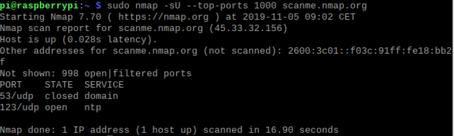
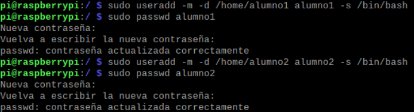
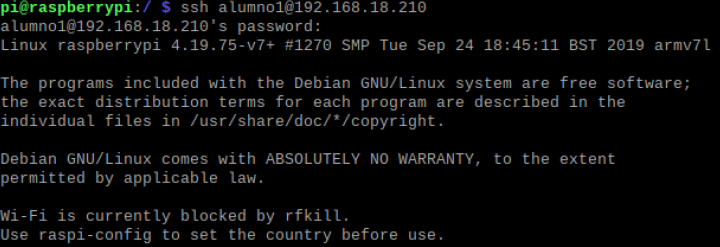
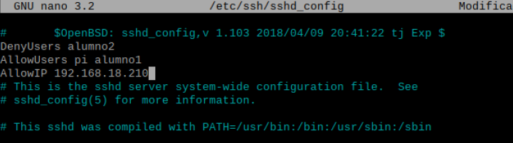
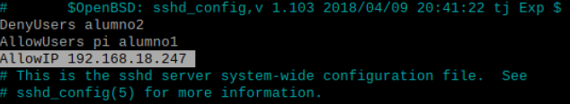
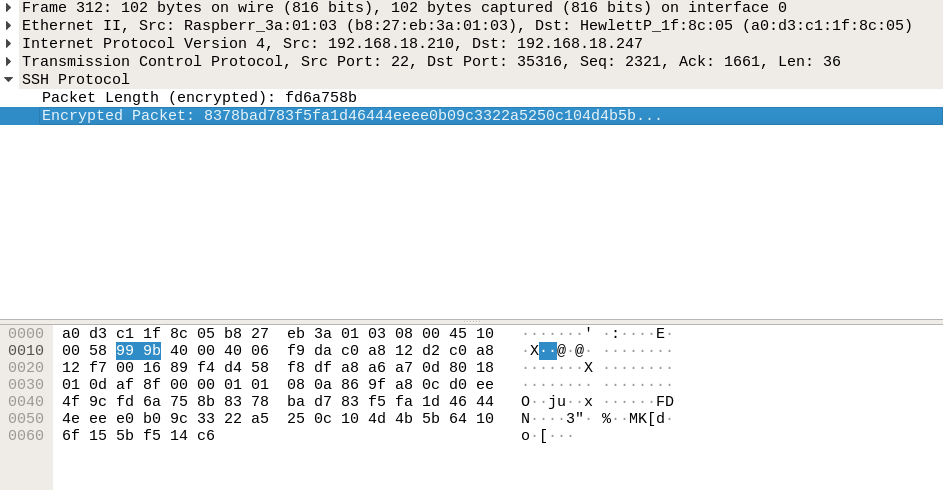

1 - Instalar servidor SSH en linux y comprobar que se escucha el puerto 22.
2 - Crear dos usuarios denominados usuario1 y usuario2.
3 - Comrpobar que podemos acceder mediante ssh a estos usuarios.
4 - Cambiar el puerto del servidor e intentar acceder de nuevo.

5 - Cambiar configuracion del servidor para poder acceder con el usr1 y no con el usr2 no.
6 - Cambiar la configuracion del servidor para que solo se puede acceder desde una IP determinada.
7 - Captura de Wireshark con conexion a SSH y comprobar que el login y contrasena van encriptadas.
